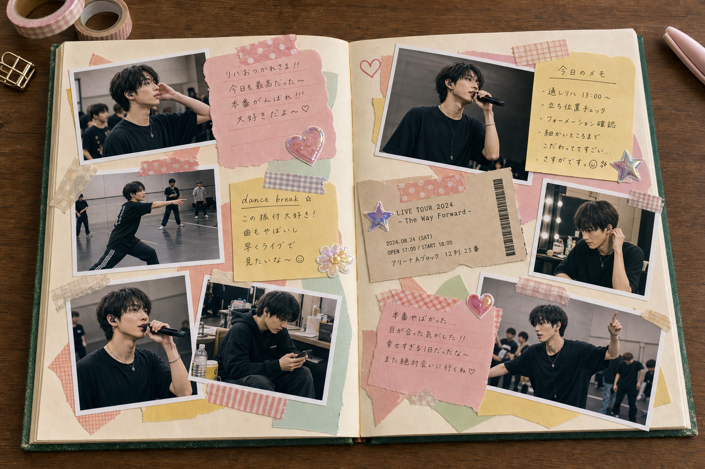
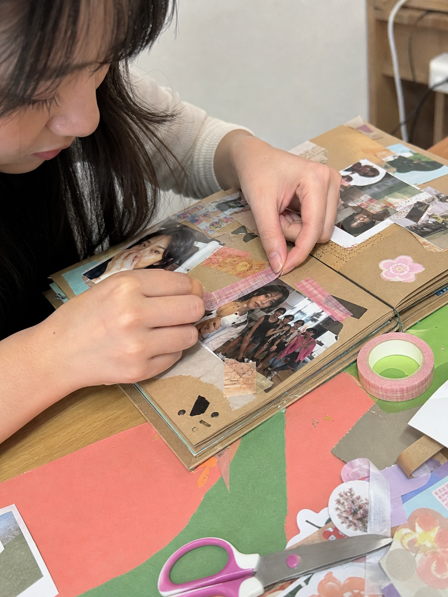
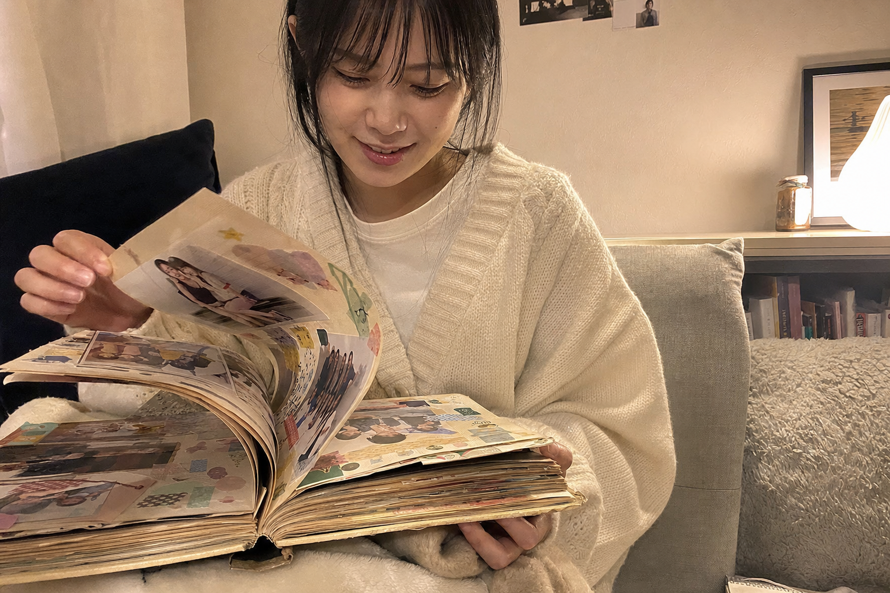

あなたの何気ない練習時間が、ファンのアルバムに大切に貼られ、何度も見返される「世界に1つの一点物」になる。捨てていた時間を、そのまま収益に。

ファンが、あなたの記録を綴じたページレッスン、リハ、ネタ合わせ、楽屋の準備。積み重ねているのに、その時間そのものは1円にもならない。ライブとグッズの日だけが収入で、あとは全部“持ち出し”——そんな毎日を続けていませんか。
その消えていく時間に、
ファンは、お金を払いたがっている。
アーティストは「◯月◯日のこの練習」という未来の時間枠を出品するだけ。ファンはその枠を買い、あなたは当日スマホで練習を撮ります。撮った映像は約10秒の短い断片に分割され、購入者ひとりひとりに、世界で1つの断片がランダムに、重複なしで配られます。
チェキや生写真と同じ“一点物グッズ”。違うのは、本人の本物の練習が、動いて残ること。ファンは中身が届くまで分からない——だから、届いた断片は特別になる。


スクラップブックを作るのと同じ流れ。あなたがすることは、当日スマホで撮るだけです。
未来の練習の時間枠を出品。日時・価格・配布本数・1本の長さを決める。
当日スマホで練習を撮ってアップ。編集不要。自動で約10秒の断片に分割される。
公開前に中身を確認できる。承認した断片が、購入者へ1本ずつ重複なしで配られる。
ファンは自分だけの断片を受け取り、アルバムに綴じて、何度も見返す。
まだ撮影すらされていない時間枠を買う。だから、届くまで中身は誰にも分からない。
1本の練習が短い断片に分かれ、同じものは2人といない。世界に1つずつ配られる。
受け取った断片は、ファンが自分の手で選んで綴じる。あなたの時間が、宝物のページになる。
出品して、当日撮って、公開前に確認して、届く。実際のアプリ画面で、使うイメージをそのまま確かめてください。
ファンには 「中身は届くまで分からない、世界に1つの約10秒」 が届きます。受け取ったファンが、それを自分のアルバムに貼っていく——次のページで。
「まだ有名じゃなかった頃の、この人の練習」——その断片を、ファンは自分のアルバムに大切に貼り、寝る前に何度も見返します。
あなたが何気なく撮った10秒が、誰かの「一番好きなページ」になる。Lapsellが届けるのは、収益だけじゃない。あなたの時間には、そこまで愛される価値があるという実感です。
「本当に売れるの?」——その不安への答えは、いまの推し活の中にすでにあります。数字はすべて「何の数字か」を先に。
つまりファンは、すでに「一点物・素のコンテンツ・本人とのつながり」に実際にお金を払っています。Lapsellの「動く素の一点物」も、同じ行動原理で買われます。
捨てていた練習・裏側の時間が、そのまま新しい収益源に。初期費用0円・手数料5%〜。ノーリスクで始められます。
「自分が育てた」という物語ごと、ファンが買う。結成11年でブレイクしたグループのように——下積みの一点物は、時が経つほど特別になります。
ファンがアルバムに貼り、見返し、語る。一点物は「持っていること」自体が語られ、あなたのことが静かに伝わっていきます。
当日スマホで練習を撮ってアップするだけ。分割も配布も自動。いつもの練習に、出品を1つ足すだけです。
ライブ配信と違い、Lapsellは撮影してからアップロードする仕組み。公開前にあなたが中身を確認し、本当にまずい“事故”の瞬間だけを非公開にできます（該当の購入者には自動で返金）。安心して、素の練習を撮れます。
大丈夫です。当日、いつもの練習をスマホで撮ってアップするだけ。約10秒の断片への分割も、配布も、すべて自動です。編集は必要ありません。
少人数でも大丈夫です。配布本数は自分で設定できるので、いまのファンの数に合わせて小さく始められます。むしろ“下積みの今”の一点物ほど、後から特別な価値になります。
公開前にあなた自身が全ての断片を確認できます。まずい瞬間は非公開にでき、その購入者には自動で返金されます。あなたが承認した断片だけが届きます。
初期費用は0円、月額もありません。かかるのは売れたときの手数料5%〜だけ。売れなければ費用は発生しないので、ノーリスクで試せます。
配信は流れて消え、リアルタイムなので事故も防げません。Lapsellは「動く一点物」として1本ずつ手元に残り、公開前チェックもできます。ファンにとっては“持てる・貼れる・見返せる”のが決定的な違いです。
初期費用0円・手数料5%〜。今日の練習から、出品を1つ足すだけ。捨てていた時間が、収益に、そして愛される一点物に変わります。
無料で出品をはじめる